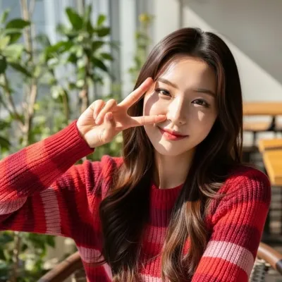

얼굴형에 맞는 헤어를 고르면 이목이 더 균형 있게 보이고, 분위기도 살아납니다. 대표적인 얼굴형별 포인트만 간단히 정리해 볼게요.

둥근형 (Round)
볼이 풍만하고 이마·턱 길이가 비슷한 편이라면, 옆으로 흐르는 볼륨, 레이어드 컷, 사이드 가르마가 도움이 됩니다. 턱선을 길어 보이게 하는 중단 길이나 턱 아래 라인이 있는 스타일을 추천해요. 너무 짧은 뽀글머리나 앞머리만 덮는 스타일은 피하는 것이 좋아요.
각진형 (Square)
턱선이나 광대가 각져 보이는 타입이라면, 부드러운 웨이브, 레이어, 옆머리로 각도를 완화해 주세요. 턱을 가리거나 턱선을 부드럽게 넘어오는 길이와 볼륨이 잘 어울립니다.
긴형 (Oval / Long)
얼굴이 길게 느껴진다면 앞머리, 단발, 턱선 근처 볼륨으로 가로감을 더해 주는 것이 좋아요. 중간 파트나 짧은 단발로 길이감을 줄일 수 있습니다.
참고 테스트
나의 얼굴형에 맞는 헤어가 궁금하다면 컬러모어톤랩의 얼굴형 기반 헤어스타일 추천 테스트로 참고용 결과를 확인해 보세요.